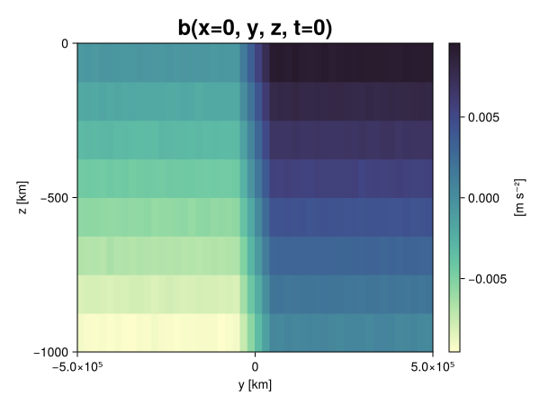
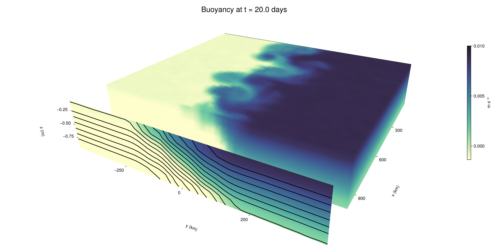

Baroclinic adjustment
In this example, we simulate the evolution and equilibration of a baroclinically unstable front.
Install dependencies
First let's make sure we have all required packages installed.
using Pkg
pkg"add Oceananigans, CairoMakie"using Oceananigans
using Oceananigans.UnitsGrid
We use a three-dimensional channel that is periodic in the x direction:
Lx = 1000kilometers # east-west extent [m]
Ly = 1000kilometers # north-south extent [m]
Lz = 1kilometers # depth [m]
grid = RectilinearGrid(size = (48, 48, 8),
x = (0, Lx),
y = (-Ly/2, Ly/2),
z = (-Lz, 0),
topology = (Periodic, Bounded, Bounded))48×48×8 RectilinearGrid{Float64, Periodic, Bounded, Bounded} on CPU with 3×3×3 halo
├── Periodic x ∈ [0.0, 1.0e6) regularly spaced with Δx=20833.3
├── Bounded y ∈ [-500000.0, 500000.0] regularly spaced with Δy=20833.3
└── Bounded z ∈ [-1000.0, 0.0] regularly spaced with Δz=125.0Model
We built a HydrostaticFreeSurfaceModel with an ImplicitFreeSurface solver. Regarding Coriolis, we use a beta-plane centered at 45° South.
model = HydrostaticFreeSurfaceModel(; grid,
coriolis = BetaPlane(latitude = -45),
buoyancy = BuoyancyTracer(),
tracers = :b,
momentum_advection = WENO(),
tracer_advection = WENO())HydrostaticFreeSurfaceModel{CPU, RectilinearGrid}(time = 0 seconds, iteration = 0)
├── grid: 48×48×8 RectilinearGrid{Float64, Periodic, Bounded, Bounded} on CPU with 3×3×3 halo
├── timestepper: QuasiAdamsBashforth2TimeStepper
├── tracers: b
├── closure: Nothing
├── buoyancy: BuoyancyTracer with ĝ = NegativeZDirection()
├── free surface: ImplicitFreeSurface with gravitational acceleration 9.80665 m s⁻²
│ └── solver: FFTImplicitFreeSurfaceSolver
├── advection scheme:
│ ├── momentum: WENO reconstruction order 5
│ └── b: WENO reconstruction order 5
└── coriolis: BetaPlane{Float64}We start our simulation from rest with a baroclinically unstable buoyancy distribution. We use ramp(y, Δy), defined below, to specify a front with width Δy and horizontal buoyancy gradient M². We impose the front on top of a vertical buoyancy gradient N² and a bit of noise.
"""
ramp(y, Δy)
Linear ramp from 0 to 1 between -Δy/2 and +Δy/2.
For example:
```
y < -Δy/2 => ramp = 0
-Δy/2 < y < -Δy/2 => ramp = y / Δy
y > Δy/2 => ramp = 1
```
"""
ramp(y, Δy) = min(max(0, y/Δy + 1/2), 1)
N² = 1e-5 # [s⁻²] buoyancy frequency / stratification
M² = 1e-7 # [s⁻²] horizontal buoyancy gradient
Δy = 100kilometers # width of the region of the front
Δb = Δy * M² # buoyancy jump associated with the front
ϵb = 1e-2 * Δb # noise amplitude
bᵢ(x, y, z) = N² * z + Δb * ramp(y, Δy) + ϵb * randn()
set!(model, b=bᵢ)Let's visualize the initial buoyancy distribution.
using CairoMakie
# Build coordinates with units of kilometers
x, y, z = 1e-3 .* nodes(grid, (Center(), Center(), Center()))
b = model.tracers.b
fig, ax, hm = heatmap(view(b, 1, :, :),
colormap = :deep,
axis = (xlabel = "y [km]",
ylabel = "z [km]",
title = "b(x=0, y, z, t=0)",
titlesize = 24))
Colorbar(fig[1, 2], hm, label = "[m s⁻²]")
fig
Simulation
Now let's build a Simulation.
simulation = Simulation(model, Δt=20minutes, stop_time=20days)Simulation of HydrostaticFreeSurfaceModel{CPU, RectilinearGrid}(time = 0 seconds, iteration = 0)
├── Next time step: 20 minutes
├── Elapsed wall time: 0 seconds
├── Wall time per iteration: NaN days
├── Stop time: 20 days
├── Stop iteration : Inf
├── Wall time limit: Inf
├── Callbacks: OrderedDict with 4 entries:
│ ├── stop_time_exceeded => Callback of stop_time_exceeded on IterationInterval(1)
│ ├── stop_iteration_exceeded => Callback of stop_iteration_exceeded on IterationInterval(1)
│ ├── wall_time_limit_exceeded => Callback of wall_time_limit_exceeded on IterationInterval(1)
│ └── nan_checker => Callback of NaNChecker for u on IterationInterval(100)
├── Output writers: OrderedDict with no entries
└── Diagnostics: OrderedDict with no entriesWe add a TimeStepWizard callback to adapt the simulation's time-step,
conjure_time_step_wizard!(simulation, IterationInterval(20), cfl=0.2, max_Δt=20minutes)Also, we add a callback to print a message about how the simulation is going,
using Printf
wall_clock = Ref(time_ns())
function print_progress(sim)
u, v, w = model.velocities
progress = 100 * (time(sim) / sim.stop_time)
elapsed = (time_ns() - wall_clock[]) / 1e9
@printf("[%05.2f%%] i: %d, t: %s, wall time: %s, max(u): (%6.3e, %6.3e, %6.3e) m/s, next Δt: %s\n",
progress, iteration(sim), prettytime(sim), prettytime(elapsed),
maximum(abs, u), maximum(abs, v), maximum(abs, w), prettytime(sim.Δt))
wall_clock[] = time_ns()
return nothing
end
add_callback!(simulation, print_progress, IterationInterval(100))Diagnostics/Output
Here, we save the buoyancy, $b$, at the edges of our domain as well as the zonal ($x$) average of buoyancy.
u, v, w = model.velocities
ζ = ∂x(v) - ∂y(u)
B = Average(b, dims=1)
U = Average(u, dims=1)
V = Average(v, dims=1)
filename = "baroclinic_adjustment"
save_fields_interval = 0.5day
slicers = (east = (grid.Nx, :, :),
north = (:, grid.Ny, :),
bottom = (:, :, 1),
top = (:, :, grid.Nz))
for side in keys(slicers)
indices = slicers[side]
simulation.output_writers[side] = JLD2OutputWriter(model, (; b, ζ);
filename = filename * "_$(side)_slice",
schedule = TimeInterval(save_fields_interval),
overwrite_existing = true,
indices)
end
simulation.output_writers[:zonal] = JLD2OutputWriter(model, (; b=B, u=U, v=V);
filename = filename * "_zonal_average",
schedule = TimeInterval(save_fields_interval),
overwrite_existing = true)JLD2OutputWriter scheduled on TimeInterval(12 hours):
├── filepath: ./baroclinic_adjustment_zonal_average.jld2
├── 3 outputs: (b, u, v)
├── array type: Array{Float64}
├── including: [:grid, :coriolis, :buoyancy, :closure]
├── file_splitting: NoFileSplitting
└── file size: 30.7 KiBNow we're ready to run.
@info "Running the simulation..."
run!(simulation)
@info "Simulation completed in " * prettytime(simulation.run_wall_time)[ Info: Running the simulation...
[ Info: Initializing simulation...
[00.00%] i: 0, t: 0 seconds, wall time: 26.402 seconds, max(u): (0.000e+00, 0.000e+00, 0.000e+00) m/s, next Δt: 20 minutes
[ Info: ... simulation initialization complete (29.725 seconds)
[ Info: Executing initial time step...
[ Info: ... initial time step complete (24.139 seconds).
[06.94%] i: 100, t: 1.389 days, wall time: 43.576 seconds, max(u): (1.321e-01, 1.326e-01, 1.639e-03) m/s, next Δt: 20 minutes
[13.89%] i: 200, t: 2.778 days, wall time: 1.187 seconds, max(u): (2.417e-01, 1.877e-01, 1.949e-03) m/s, next Δt: 20 minutes
[20.83%] i: 300, t: 4.167 days, wall time: 1.232 seconds, max(u): (3.087e-01, 2.656e-01, 1.911e-03) m/s, next Δt: 20 minutes
[27.78%] i: 400, t: 5.556 days, wall time: 1.181 seconds, max(u): (3.617e-01, 3.374e-01, 2.044e-03) m/s, next Δt: 20 minutes
[34.72%] i: 500, t: 6.944 days, wall time: 1.391 seconds, max(u): (4.168e-01, 4.204e-01, 1.995e-03) m/s, next Δt: 20 minutes
[41.67%] i: 600, t: 8.333 days, wall time: 1.346 seconds, max(u): (5.154e-01, 5.860e-01, 2.030e-03) m/s, next Δt: 20 minutes
[48.61%] i: 700, t: 9.722 days, wall time: 1.668 seconds, max(u): (7.058e-01, 8.583e-01, 2.703e-03) m/s, next Δt: 20 minutes
[55.56%] i: 800, t: 11.111 days, wall time: 1.248 seconds, max(u): (1.033e+00, 1.227e+00, 3.565e-03) m/s, next Δt: 20 minutes
[62.50%] i: 900, t: 12.500 days, wall time: 1.203 seconds, max(u): (1.363e+00, 1.231e+00, 5.091e-03) m/s, next Δt: 20 minutes
[69.44%] i: 1000, t: 13.889 days, wall time: 1.210 seconds, max(u): (1.353e+00, 1.162e+00, 4.866e-03) m/s, next Δt: 20 minutes
[76.39%] i: 1100, t: 15.278 days, wall time: 1.119 seconds, max(u): (1.337e+00, 1.125e+00, 4.942e-03) m/s, next Δt: 20 minutes
[83.33%] i: 1200, t: 16.667 days, wall time: 1.123 seconds, max(u): (1.434e+00, 1.147e+00, 4.840e-03) m/s, next Δt: 20 minutes
[90.28%] i: 1300, t: 18.056 days, wall time: 1.162 seconds, max(u): (1.230e+00, 1.022e+00, 2.627e-03) m/s, next Δt: 20 minutes
[97.22%] i: 1400, t: 19.444 days, wall time: 1.182 seconds, max(u): (1.146e+00, 1.035e+00, 2.231e-03) m/s, next Δt: 20 minutes
[ Info: Simulation is stopping after running for 1.260 minutes.
[ Info: Simulation time 20 days equals or exceeds stop time 20 days.
[ Info: Simulation completed in 1.260 minutes
Visualization
All that's left is to make a pretty movie. Actually, we make two visualizations here. First, we illustrate how to make a 3D visualization with Makie's Axis3 and Makie.surface. Then we make a movie in 2D. We use CairoMakie in this example, but note that using GLMakie is more convenient on a system with OpenGL, as figures will be displayed on the screen.
using CairoMakieThree-dimensional visualization
We load the saved buoyancy output on the top, north, and east surface as FieldTimeSerieses.
filename = "baroclinic_adjustment"
sides = keys(slicers)
slice_filenames = NamedTuple(side => filename * "_$(side)_slice.jld2" for side in sides)
b_timeserieses = (east = FieldTimeSeries(slice_filenames.east, "b"),
north = FieldTimeSeries(slice_filenames.north, "b"),
top = FieldTimeSeries(slice_filenames.top, "b"))
B_timeseries = FieldTimeSeries(filename * "_zonal_average.jld2", "b")
times = B_timeseries.times
grid = B_timeseries.grid48×48×8 RectilinearGrid{Float64, Periodic, Bounded, Bounded} on CPU with 3×3×3 halo
├── Periodic x ∈ [0.0, 1.0e6) regularly spaced with Δx=20833.3
├── Bounded y ∈ [-500000.0, 500000.0] regularly spaced with Δy=20833.3
└── Bounded z ∈ [-1000.0, 0.0] regularly spaced with Δz=125.0We build the coordinates. We rescale horizontal coordinates to kilometers.
xb, yb, zb = nodes(b_timeserieses.east)
xb = xb ./ 1e3 # convert m -> km
yb = yb ./ 1e3 # convert m -> km
Nx, Ny, Nz = size(grid)
x_xz = repeat(x, 1, Nz)
y_xz_north = y[end] * ones(Nx, Nz)
z_xz = repeat(reshape(z, 1, Nz), Nx, 1)
x_yz_east = x[end] * ones(Ny, Nz)
y_yz = repeat(y, 1, Nz)
z_yz = repeat(reshape(z, 1, Nz), grid.Ny, 1)
x_xy = x
y_xy = y
z_xy_top = z[end] * ones(grid.Nx, grid.Ny)Then we create a 3D axis. We use zonal_slice_displacement to control where the plot of the instantaneous zonal average flow is located.
fig = Figure(size = (1600, 800))
zonal_slice_displacement = 1.2
ax = Axis3(fig[2, 1],
aspect=(1, 1, 1/5),
xlabel = "x (km)",
ylabel = "y (km)",
zlabel = "z (m)",
xlabeloffset = 100,
ylabeloffset = 100,
zlabeloffset = 100,
limits = ((x[1], zonal_slice_displacement * x[end]), (y[1], y[end]), (z[1], z[end])),
elevation = 0.45,
azimuth = 6.8,
xspinesvisible = false,
zgridvisible = false,
protrusions = 40,
perspectiveness = 0.7)Axis3()We use data from the final savepoint for the 3D plot. Note that this plot can easily be animated by using Makie's Observable. To dive into Observables, check out Makie.jl's Documentation.
n = length(times)41Now let's make a 3D plot of the buoyancy and in front of it we'll use the zonally-averaged output to plot the instantaneous zonal-average of the buoyancy.
b_slices = (east = interior(b_timeserieses.east[n], 1, :, :),
north = interior(b_timeserieses.north[n], :, 1, :),
top = interior(b_timeserieses.top[n], :, :, 1))
# Zonally-averaged buoyancy
B = interior(B_timeseries[n], 1, :, :)
clims = 1.1 .* extrema(b_timeserieses.top[n][:])
kwargs = (colorrange=clims, colormap=:deep, shading=NoShading)
surface!(ax, x_yz_east, y_yz, z_yz; color = b_slices.east, kwargs...)
surface!(ax, x_xz, y_xz_north, z_xz; color = b_slices.north, kwargs...)
surface!(ax, x_xy, y_xy, z_xy_top; color = b_slices.top, kwargs...)
sf = surface!(ax, zonal_slice_displacement .* x_yz_east, y_yz, z_yz; color = B, kwargs...)
contour!(ax, y, z, B; transformation = (:yz, zonal_slice_displacement * x[end]),
levels = 15, linewidth = 2, color = :black)
Colorbar(fig[2, 2], sf, label = "m s⁻²", height = Relative(0.4), tellheight=false)
title = "Buoyancy at t = " * string(round(times[n] / day, digits=1)) * " days"
fig[1, 1:2] = Label(fig, title; fontsize = 24, tellwidth = false, padding = (0, 0, -120, 0))
rowgap!(fig.layout, 1, Relative(-0.2))
colgap!(fig.layout, 1, Relative(-0.1))
save("baroclinic_adjustment_3d.png", fig)
Two-dimensional movie
We make a 2D movie that shows buoyancy $b$ and vertical vorticity $ζ$ at the surface, as well as the zonally-averaged zonal and meridional velocities $U$ and $V$ in the $(y, z)$ plane. First we load the FieldTimeSeries and extract the additional coordinates we'll need for plotting
ζ_timeseries = FieldTimeSeries(slice_filenames.top, "ζ")
U_timeseries = FieldTimeSeries(filename * "_zonal_average.jld2", "u")
B_timeseries = FieldTimeSeries(filename * "_zonal_average.jld2", "b")
V_timeseries = FieldTimeSeries(filename * "_zonal_average.jld2", "v")
xζ, yζ, zζ = nodes(ζ_timeseries)
yv = ynodes(V_timeseries)
xζ = xζ ./ 1e3 # convert m -> km
yζ = yζ ./ 1e3 # convert m -> km
yv = yv ./ 1e3 # convert m -> km49-element Vector{Float64}:
-500.0
-479.1666666666667
-458.3333333333333
-437.5
-416.6666666666667
-395.8333333333333
-375.0
-354.1666666666667
-333.3333333333333
-312.5
-291.6666666666667
-270.8333333333333
-250.0
-229.16666666666666
-208.33333333333334
-187.5
-166.66666666666666
-145.83333333333334
-125.0
-104.16666666666667
-83.33333333333333
-62.5
-41.666666666666664
-20.833333333333332
0.0
20.833333333333332
41.666666666666664
62.5
83.33333333333333
104.16666666666667
125.0
145.83333333333334
166.66666666666666
187.5
208.33333333333334
229.16666666666666
250.0
270.8333333333333
291.6666666666667
312.5
333.3333333333333
354.1666666666667
375.0
395.8333333333333
416.6666666666667
437.5
458.3333333333333
479.1666666666667
500.0Next, we set up a plot with 4 panels. The top panels are large and square, while the bottom panels get a reduced aspect ratio through rowsize!.
set_theme!(Theme(fontsize=24))
fig = Figure(size=(1800, 1000))
axb = Axis(fig[1, 2], xlabel="x (km)", ylabel="y (km)", aspect=1)
axζ = Axis(fig[1, 3], xlabel="x (km)", ylabel="y (km)", aspect=1, yaxisposition=:right)
axu = Axis(fig[2, 2], xlabel="y (km)", ylabel="z (m)")
axv = Axis(fig[2, 3], xlabel="y (km)", ylabel="z (m)", yaxisposition=:right)
rowsize!(fig.layout, 2, Relative(0.3))To prepare a plot for animation, we index the timeseries with an Observable,
n = Observable(1)
b_top = @lift interior(b_timeserieses.top[$n], :, :, 1)
ζ_top = @lift interior(ζ_timeseries[$n], :, :, 1)
U = @lift interior(U_timeseries[$n], 1, :, :)
V = @lift interior(V_timeseries[$n], 1, :, :)
B = @lift interior(B_timeseries[$n], 1, :, :)Observable([-0.009390366565552772 -0.008117326575954991 -0.006893892698574527 -0.005624998528382122 -0.004364938636193369 -0.003122256658590066 -0.001879156125818734 -0.0006082758857733223; -0.009343919815537637 -0.008133222060663888 -0.006880493626236435 -0.0056137421614906174 -0.004375927989449972 -0.003115813513941431 -0.0018659255436891274 -0.0006395976826215071; -0.009349607502736815 -0.008117689340811867 -0.0068656070865012395 -0.005609321837083201 -0.004381421540329997 -0.003143992028681982 -0.0018765356186481947 -0.0006291778842244045; -0.009348071937570904 -0.00811006190829521 -0.006883541941383876 -0.0056263943077020165 -0.004379697783206735 -0.0031267836835943575 -0.0018786011782448216 -0.0006182844687126807; -0.009345315231918616 -0.008123798686877204 -0.006863140610075342 -0.005627940643369695 -0.004389249337788107 -0.0031372508981228077 -0.0018924079523931763 -0.0006164050774715949; -0.009376515717289155 -0.008143593997855579 -0.006860682214887506 -0.005614872584451117 -0.0043668313815791344 -0.003117742825585449 -0.0018629857993417674 -0.0006273347537712244; -0.009359435574841762 -0.008144622695904562 -0.006900506703792862 -0.005637964403873948 -0.004376393491185866 -0.003121513634997983 -0.0018794225828783605 -0.0006089136524739641; -0.009363741202729764 -0.008139591741054846 -0.00685682993643866 -0.005647929613983205 -0.004385747586057119 -0.003137288710174519 -0.0018605171752244909 -0.0006262422651500667; -0.009380508314113887 -0.008107627954976286 -0.006889064285866708 -0.0055981333903562846 -0.004383066354985196 -0.0031152773410684123 -0.0018550440152848011 -0.0006269135602100794; -0.009403354348460173 -0.008128954530984493 -0.006875387973529482 -0.005623867712416797 -0.004387340584029081 -0.003152107592549828 -0.001893599882436951 -0.0006098516680021574; -0.00938649307139199 -0.008130754878545325 -0.0068648611475198296 -0.005624988187133875 -0.004382887211309646 -0.0030926056052519315 -0.001861968954634462 -0.000610550995107602; -0.009380634098025156 -0.00809125984444513 -0.0068960681316753624 -0.005647595916439113 -0.00438574687092345 -0.0031222027740192017 -0.0018887761609099208 -0.0006280606022834787; -0.009364881674023015 -0.008122028789006634 -0.006860638650184586 -0.005619799118649407 -0.00437339587471948 -0.003102990482607514 -0.0018882615514704722 -0.0006058941220574936; -0.00936979828703779 -0.008115563696972453 -0.006885488717324479 -0.005603662760361827 -0.004393746891503221 -0.0031222144547552594 -0.0018646329039782202 -0.0006478123086871758; -0.009380144820592662 -0.008114794674046669 -0.00687754713513634 -0.005613942031800712 -0.004366900039051136 -0.0031190908920460617 -0.0018847688475772323 -0.0006192834533927151; -0.009356643315432131 -0.008123254950999744 -0.006856976879570822 -0.005650260594203656 -0.004377218703224041 -0.0031355308226117193 -0.001852230007538215 -0.0006191321490421713; -0.009358009353859923 -0.008138314017721084 -0.006872069678158924 -0.005623250146860821 -0.004373180829332691 -0.0030928231391553532 -0.0018903414287458982 -0.0006334991170356937; -0.009355055376731073 -0.008123343733795873 -0.0068558700429107305 -0.0056416312016784 -0.0043986178914242145 -0.003114256284783214 -0.0018731423541628858 -0.0006135666126090843; -0.009382129013544785 -0.008126035118429945 -0.006858815764526466 -0.0056456501842556015 -0.004366591532390948 -0.0031200711597880533 -0.0018823139933490593 -0.0006117731842106232; -0.009375813308808115 -0.008142457372714622 -0.006884159991694633 -0.005639072844852232 -0.004380635271126049 -0.0031512211276670636 -0.0018766316184055086 -0.0005960360400023538; -0.009381774940876128 -0.008118402159234938 -0.0068614859997749135 -0.0056347800307952785 -0.004350873119159285 -0.003136026631267595 -0.001886676361200175 -0.0006434740810599137; -0.009347117232485408 -0.008130851751790276 -0.006875184454814321 -0.005621081719994884 -0.004376482062836391 -0.003120377908096493 -0.0018468346889893852 -0.0006366073423927234; -0.007508065210797394 -0.006251854079933865 -0.0049989055222809204 -0.0037469120268382693 -0.002491269936470265 -0.0012486151479430669 3.1260775025314775e-5 0.0012655153531036768; -0.005419954173569721 -0.004166095294635807 -0.002929029963873887 -0.001691308562980813 -0.00040790905924744736 0.0008172776949293175 0.0020687304037482947 0.0033237141612164982; -0.0033253260498755373 -0.002056545699983543 -0.0008357218865107137 0.0004079440781179355 0.0016734783323485054 0.0029250424110102632 0.004178857316904643 0.005419796429136335; -0.0012435262895983963 6.834797313718139e-7 0.0012519209595296071 0.0025310445008537553 0.003744489038782231 0.004968246131463911 0.006243569658763433 0.007465600469959807; 0.0006232791569316622 0.001890007350284403 0.0031342512421839437 0.0043916952875638045 0.005631557012238323 0.0068863114453033185 0.00811497394047985 0.009392504826176326; 0.0006366412578024793 0.0018853428769341986 0.0031128582462419258 0.004366315439144049 0.005633200401767784 0.006880595825001941 0.008120306881484237 0.009346289973587241; 0.0006432596630816026 0.0018464966141220954 0.0031028333968757247 0.004388832967547664 0.005621004417510421 0.006858760663150926 0.008149295431038291 0.009389734837777016; 0.000661545633486354 0.0018907693234010714 0.003137599357797173 0.004387579783344807 0.005622387547633149 0.0068726594656732505 0.008158655512129414 0.00937772035224004; 0.0006398546528549923 0.001868696763973562 0.003098588884946443 0.004372189129448879 0.005661964073945855 0.006886557590156453 0.008124184402126096 0.00934763268183146; 0.0006074427379565644 0.0018797833110389278 0.0031606623233024467 0.004375085733306922 0.005620878498353729 0.006885855152811899 0.008117986877255153 0.009386271644518796; 0.0006249748922592759 0.0018746553095639797 0.0031262798534344113 0.004363398505578758 0.005605742261784198 0.006871103081836142 0.0081334824304032 0.009384697681891126; 0.0006221478423007938 0.0018641442117873306 0.0031348917393785 0.004377170222153399 0.005646513379200204 0.0068933022713027455 0.008142145763041918 0.009368455644064579; 0.0006612419095495372 0.0018955258850392829 0.003096985956322152 0.004366948241905047 0.005619631091873914 0.006856957785979479 0.008120475196874718 0.009365455259480862; 0.000634064453685663 0.0018576839616358993 0.0031224591870525425 0.004363359998512292 0.005643484737129212 0.0068797231820056 0.008137677318876652 0.009376479042851757; 0.000605290597114433 0.0018591145217712035 0.0031004294267297024 0.0043644249316412516 0.005637265513607441 0.006867485686096329 0.0081377064807724 0.009389367664066913; 0.0006160312562430271 0.0018935436942380693 0.0031335848233088434 0.004359826101732143 0.005638201285317526 0.0068675895959979015 0.008117088946396556 0.009384595187044232; 0.0006129531017034014 0.0018717367352916823 0.0031534601267695556 0.004366209142255414 0.005611031989276705 0.006853899545105693 0.008135956442109989 0.009342089582660038; 0.000595930138974849 0.0018887007505943361 0.003121749436299065 0.00436650315883077 0.005615211940286975 0.006885029618895186 0.008102483436089875 0.009368857993683873; 0.0006213774989076563 0.0018752759078300293 0.0031352172822553016 0.004354196846403018 0.005633514570372517 0.006892770995677907 0.00812682399945418 0.009380895575810677; 0.0006206178945900632 0.0018667904012852445 0.0031408683282370883 0.0043678950440637155 0.005609930201039154 0.006879790555529245 0.008110138594908015 0.00936430112730681; 0.0006309960510624753 0.00188712504930166 0.0031143271482746374 0.0043784673732193 0.00563872544422632 0.0068988107745830765 0.008156449977391502 0.009373446423057733; 0.0005945067209985843 0.0018648757397923931 0.0031052125671835497 0.004397380592452695 0.005609342684345768 0.006872248333718962 0.008111556716258963 0.009368543097764854; 0.0006345525292013339 0.0019162057762968088 0.0031237219765118274 0.004373758114527138 0.005633270090862137 0.006886542357651141 0.00811962663630303 0.009381776167163456; 0.0006344744379193166 0.0018751101370239349 0.0031288687095978617 0.004400179872570773 0.0056441996329258835 0.0068767269395826535 0.008101560979355825 0.009360212522088537; 0.0005980740918424316 0.0019099488255250041 0.0031208978895928413 0.0043516923144238445 0.005642735381648871 0.006886805263233074 0.008105407808724064 0.009369630633439334; 0.0006206567445606061 0.0018723460219907298 0.003159049114896475 0.004395742210405334 0.00561163401551134 0.00688438791974879 0.008140089324070841 0.009377485851158175])
and then build our plot:
hm = heatmap!(axb, xb, yb, b_top, colorrange=(0, Δb), colormap=:thermal)
Colorbar(fig[1, 1], hm, flipaxis=false, label="Surface b(x, y) (m s⁻²)")
hm = heatmap!(axζ, xζ, yζ, ζ_top, colorrange=(-5e-5, 5e-5), colormap=:balance)
Colorbar(fig[1, 4], hm, label="Surface ζ(x, y) (s⁻¹)")
hm = heatmap!(axu, yb, zb, U; colorrange=(-5e-1, 5e-1), colormap=:balance)
Colorbar(fig[2, 1], hm, flipaxis=false, label="Zonally-averaged U(y, z) (m s⁻¹)")
contour!(axu, yb, zb, B; levels=15, color=:black)
hm = heatmap!(axv, yv, zb, V; colorrange=(-1e-1, 1e-1), colormap=:balance)
Colorbar(fig[2, 4], hm, label="Zonally-averaged V(y, z) (m s⁻¹)")
contour!(axv, yb, zb, B; levels=15, color=:black)Finally, we're ready to record the movie.
frames = 1:length(times)
record(fig, filename * ".mp4", frames, framerate=8) do i
n[] = i
endThis page was generated using Literate.jl.